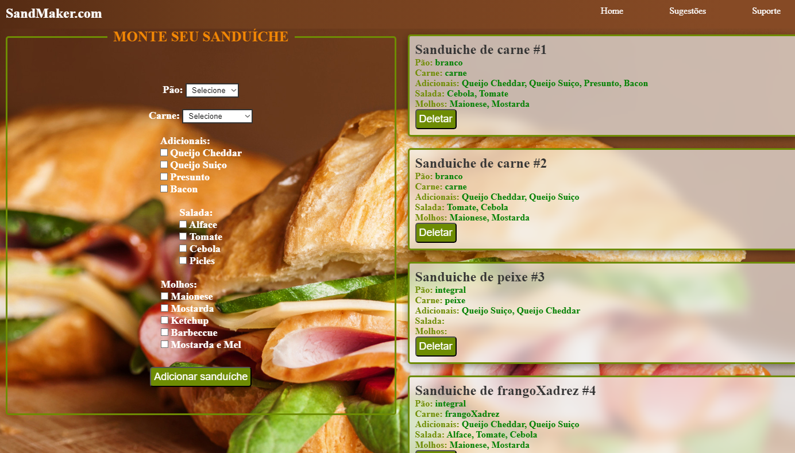
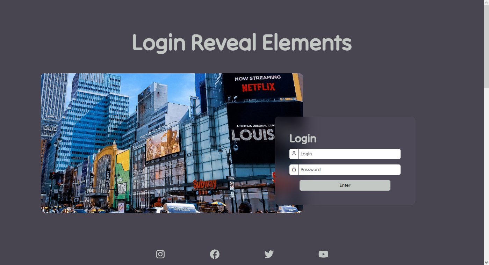

MyPlan é uma aplicação de ToDo list, que possui login e cadastro (com validação, vinculados ou localStorage) criada durante estudo sobre JavaScript.

Projeto criado durante estudo de VueJS. Formulário para criação de um sanduiche, com dashboard de pedidos.

Landing Page com efeito scrolling appear criada durante estudo de JavaScript. Apenas HTML, CSS e JavaScript puros.